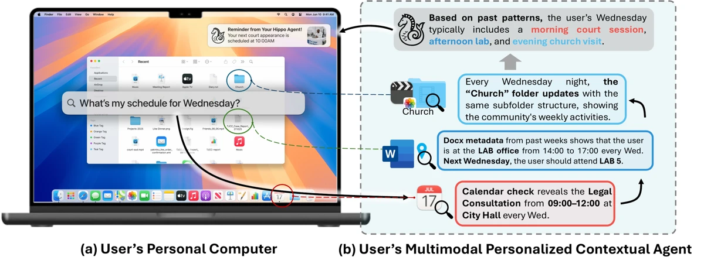

HippoCamp: Benchmarking Contextual Agents on Personal Computers
Can an agent make sense of a life’s worth of files? A device-scale benchmark with 2,000+ real files, 581 questions, and step-wise failure diagnosis.
FIRST AUTHOR · RESEARCH LEAD